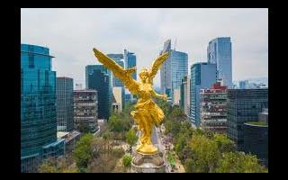

Ciudad de México
Es la densamente poblada capital de México que se encuentra a gran altura. Es famosa por su Templo Mayor (un templo azteca del siglo XIII), la Catedral Metropolitana de México, de estilo barroco, de los conquistadores españoles y el Palacio Nacional, que alberga murales históricos de Diego Rivera. Todos estos hitos se ubican en torno a la Plaza de la Constitución, la enorme plaza principal conocida también como el Zócalo.
Elevación: 2,250 m
Población: 8.855 millones (2015) Organización de las Naciones Unidas
Tiempo: 17 °C, viento del E a 5 km/h, humedad del 50 %
Clima: Oceánico de tierras altas Cwb
Entidad: Capital
